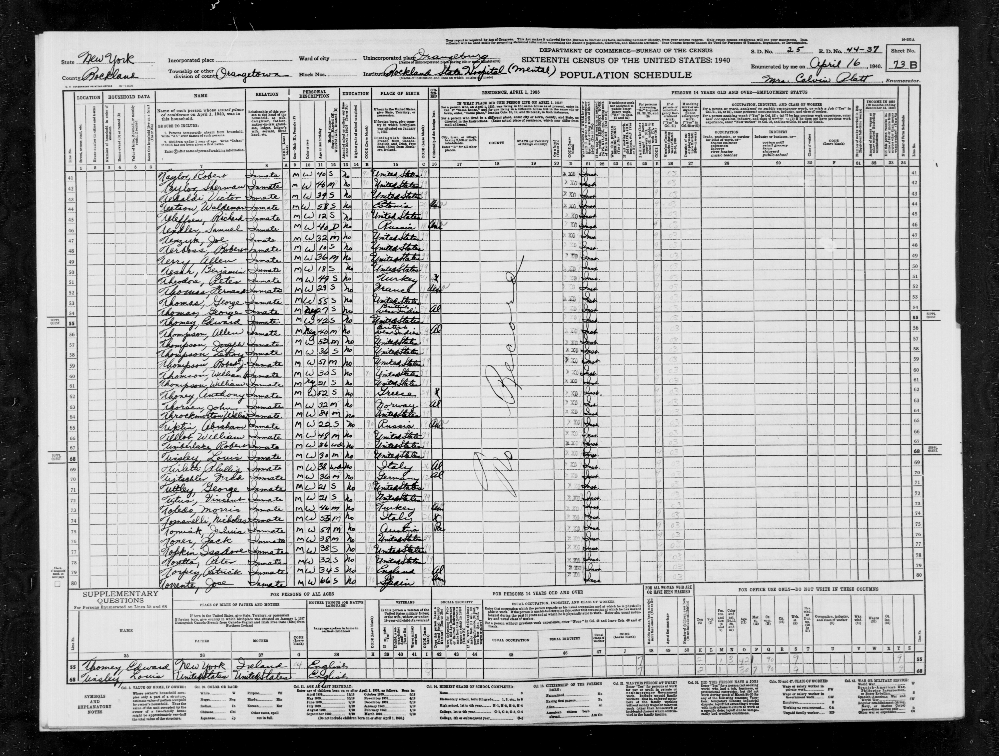
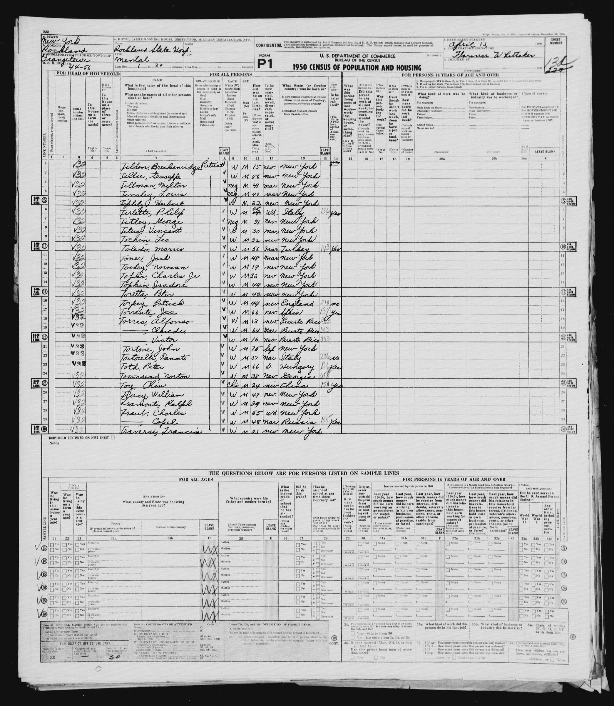

Patrick "Packy" O. Torpey

Extract from the 1930 census of Manhattan, New York. The pertinent information is on line 40.
The census indicates that Patrick Torpey, age 24, was living with his aunt, Mary Kenny, and others. Among the others were lodgers Joseph Duffy, age 21, and Cathleen Duffy, age 20.

Extract from the 1940 census of Orangetown, New York. The pertinent information is on line 79.
The census indicates that Patrick Torpey, age 34, was an "inmate" at the Rockland State Hospital (Mental).

Extract from the 1950 census of Orangetown, New York. The pertinent information is on line 16.
The census indicates that Patrick Torpey, age 44, resided at the Rockland State Hospital.